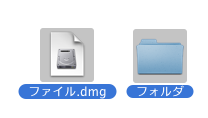
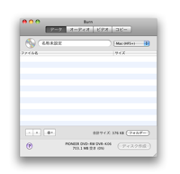
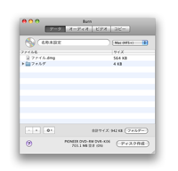
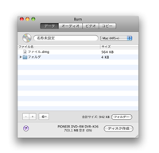
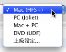
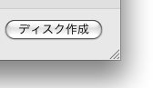
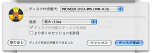
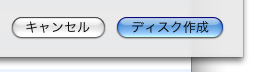

データディスクの作成:
データディスクはコンピュータにほとんど使用されます。それぞれの目的がある異なったタイプのデータディスクがあります。Burnはほとんどの一般的なディスクを作成できます。
1 幾つかのファイルを選択します
どんなファイルやフォルダーでもかまいません。

2 リストにそれらをドロップします
ファイルをリストの内側にドロップします。レイアウトとして単一のフォルダーを使用するには、リストの周りのデータタブにドロップしてください。
 

3 ファイルシステムを選択
ファイルシステムを選択:
Mac (HFS+):
Mac OS上でのみディスクを使うのであればこのファイルシステムを選択します。Windowsはこのファイルシステムを読むことができません。
PC (Joliet):
このファイルシステムはCD用に頻繁に使われ、大部分のコンピューターによって読み込まれます。DVDに使うこともできます。
DVD (UDF):
このファイルシステムはDVD用に頻繁に使われます。大部分の現代コンピューター(Mac OS 9とWindows 98 システムを含めて)により読み込まれます。CDに使うこともできます。(この項目はPantherに適用されません)
Mac + PC:
これは、MacのファイルシステムにPC のファイルシステムを加えたものです。殆ど総てのコンピューター上で読み込まれますし、Macの特殊情報(アイコンとリソースフォークのような情報)が保存されます。
高度な選択:
上記のファイルシステムの組み合わせ。PantherのISO9660 (PCの古いファイルシステム), HFS Standard (Macの古いファイルシステム) と UDF
/ ISO 9660 も。

4 ディスク作成ボタンをクリックします
ダイアログが表示されます。

5 オプションを選択します
ディスク作成時のオプションを選択します。更に多くの設定についてはBurnのメインメニュー「環境設定」を見てください。

6 ディスク作成
ディスクを作成する為に「ディスク作成」ボタンをクリックします。

7 Burn
はディスクを作成します
ディスク作成中にBurnは作成中の状態についてのダイアログを表示します。